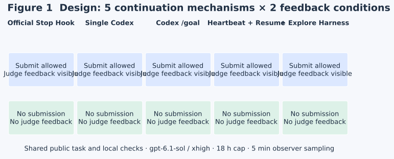
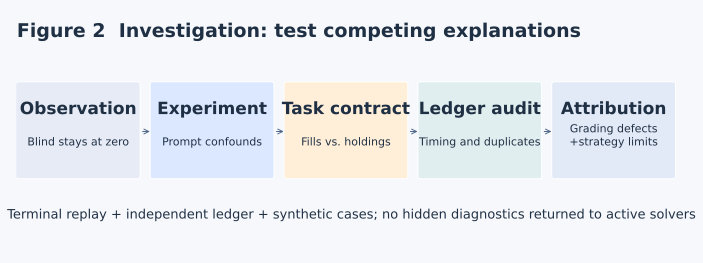
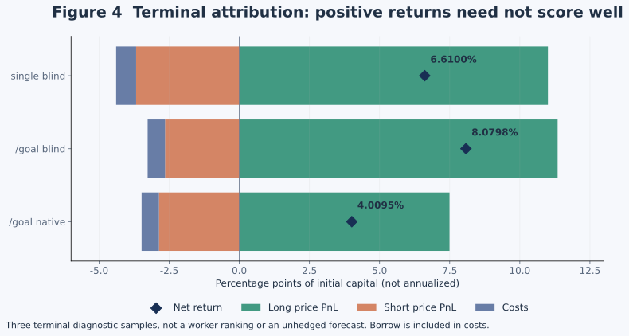
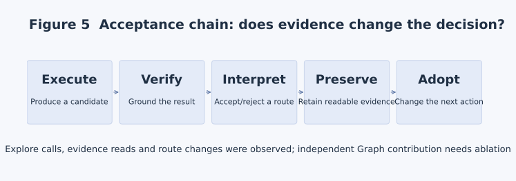

Ruiteng Huang · Research notes · October 5, 2026
Feedback and memory for long-horizon agents
Investigating EdgeBench blind zeros
I want LoopX to help agents solve harder problems. This experiment first taught us how to recognize a long run that was not becoming useful research—and how to decide whether its feedback deserved to be trusted.
We gave the same model five continuation mechanisms: the official stop hook, a single Codex call, native /goal, LoopX heartbeat with resume, and LoopX with Explore Harness. Each had a judge-feedback and a blind condition. On Portfolio Risk Calibration, several blind runs stayed at zero, while LoopX showed none of the efficiency advantage we had hoped for.
The curves invited convenient conclusions: models cannot improve without rewards; management structure only slows them down. Traces and independent replay revealed a less convenient explanation. Our own ablation changed more than feedback, task instructions conflicted with grading assumptions, and LoopX incurred avoidable protocol round trips. Some strategies still deserved zero after incorrect penalties were removed.
1. Capability first, efficiency next—both need evidence
In my recent X post, I described LoopX as an experiment in durable structured goals, recursively decomposed work, decisions and evidence. The first objective is to increase the difficulty of tasks the whole system can complete through more thorough planning, experiments and revision. Then we can study compute, latency and human-attention costs for comparable verified outcomes.
Longer runtime needs feedback that changes the next action.
There are two separate requirements: feedback must describe reality accurately, and the system must use it. A grader that treats real executions as fabricated trades breaks the first. A recovery prompt that causes the same invalid command attempts breaks the second. Both can look like hours without improvement.
The post referred to Thore Graepel's discussion of search, testing intuition and anticipating futures in AlphaGo. That does not make LoopX equivalent to game-tree search, nor does persistent execution settle whether an LLM reasons. The engineering questions are narrower: does the system solve harder tasks, which structures contribute, and can those contributions be reproduced at comparable budgets?
2. Five workers, two feedback conditions
Portfolio was the main diagnostic task; BipedalWalker Locomotion RL provided a second kind of training workload, with less complete coverage. The model was gpt-6.1-sol / xhigh. Workers differed in continuation and state retention, not model identity.

| Worker | Mechanism | What must be verified |
|---|---|---|
| Official baseline | SForge's stop-hook and continuation path | How stop is handled and when actual work or submission follows |
| Single Codex | One call, no stop hook or external continuation | Natural termination; adding a loop would change the condition |
| Native /goal | Codex goal execution | Native continuation and termination, independently of LoopX |
| Heartbeat + resume | Admission, Todo, replan, settlement and session resume | Same session, correct successor and settled Turn |
| + Explore Harness | Evidence and exploration planning | Evidence read and adopted, not merely configuration enabled |
Native workers can submit and read judge scores and diagnostics. Blind workers cannot, but may use public training data, local backtests, tests and public contract validators. “No judge feedback” is more accurate than “no feedback.” Both receive the same task and general iteration guidance.
Background evaluation samples both conditions every five minutes, without exposing results to blind solvers. The overall budget is 18 hours; there is no separate per-turn deadline or artificial delay before runnable external-worker successors. A budget is a ceiling: early termination is meaningful behavior in the single-call condition.
A stop hook is a continuation mechanism at a stopping boundary; it is not automatically a requirement to submit every round. Auto-evaluations, explicit submissions, model responses and LoopX Turns are different units. Dashboard record counts must not be interpreted as experiments or model turns. Relevant changes: #5591, #5600, #5618.
3. Blind zeros first made us question our experiment
The first blind wrapper removed submission instructions, but also removed “keep iterating,” “preserve the best version” and “failed attempts are not penalized.” Feedback availability and action guidance were confounded. We restored shared guidance, changed only the unavailable judge interaction, and started new attempts. Old curves remain diagnostic evidence.
Isolation also requires more than an instruction not to look at scores. The blind command surface lacks submission, workers receive no judge URL/token, network access is restricted to necessary model APIs, and the service rejects unauthorized submission and auto-evaluation. #5635 distinguishes feedback policy from evaluator isolation.
After fixing the wrapper, we saw multiple outputs with open_date == close_date. Solvers were reporting executions—buy, sell, short, cover—while older instructions and grader assumptions treated these fields as holding intervals. A same-day execution is not necessarily a same-day round trip. Native score probing can conceal an ambiguous contract; blind evaluation makes the ambiguity much harder to escape.

We then found reward thresholds for strong Sharpe and low drawdown conflicting with heuristic zeroing; an unpublished minimum investment level being treated as incomplete weights; scheduled updates and risk rebalances sharing a timing check; and position auditing depending on solver-supplied event labels.
EdgeBench #14 collects these repairs. The diagnostic patch demotes some unsupported zeroing rules to diagnostics. The explicitly versioned event-v1 task separates event clocks and checks positions every trading day. Neither change rewrites historical low scores as new results.
4. Is the grader checking the same account?
We froze two terminated blind submissions and replayed them in isolation: scores 0 and 8.05. Independent reconciliation used executions, cash, shares and costs, without importing solver accounting functions. All 243 trading days in each sample reconciled: equity residual below 4×10⁻⁹, NAV residual below 5×10⁻¹⁶, no share mismatch. This does not establish good strategy performance; it challenges a mismatched approximate ledger.
4.1 Post-close weights cannot earn pre-close returns
Start with 100,000 cash. An asset rises from 100 to 200; only then, at the close, buy 100 units and pay 10 commission. Immediate marked equity is 99,990, NAV 0.9999. The account did not own the asset while it doubled. The old reconstruction multiplied post-close weights by that day's return and produced about 1.199919992, rejecting the correct ledger. In a real sample it reconstructed 1.06610051 as about 1.1331, causing a 10-point penalty. Weight changes also confuse price drift with trading and do not precisely reconstruct slippage or weekend borrow charges.

4.2 An equal endpoint does not validate the path
A cash-only account should have NAV [1, 1, 1]. Reporting [1, 1.01, 1] still passes the old endpoint reconstruction. The fabricated middle value can affect volatility, drawdown, Sharpe and calibration. Every path-dependent metric needs an economically supported path.
4.3 Matching trade signatures do not prove duplicates
A terminated /goal blind sample contained seven groups of identical date, symbol, side, price and quantity signatures. Traces and accounting showed independent same-day adjustments with corresponding cash, shares and fees; most extra fills were one share, one was four. Equal signatures are a reason to investigate, not sufficient proof. A unique ID alone is also insufficient: duplicate IDs must fail, economically unsupported extra fills must fail, and genuinely independent, fully accounted identical fills must pass.
4.4 Version the accounting rules before replacing the check
Adapters for two existing solvers cannot become a general grader: their slippage and borrow policies differ. Ledger-v2 specifies 10 million initial cash and zero shares; close-price execution; 5 bps commission plus 1 bp cash slippage per fill; and 4% ACT/365 borrow on previous-close short market value, debited before next-day trades. Crossing zero inventory requires ordered legs. Every day reports cash, integer shares, costs, equity, NAV and weights. These are new experimental conventions, not retroactive rules for old submissions.
equity[t] = cash[t] + Σ shares[t,i] × close[t,i]
NAV[t] = equity[t] / initial_capital
Δequity[t] = Σ shares[t−1,i] × Δprice[t,i]
− commission[t] − slippage[t] − borrow[t]
Reconstruction starts from prices and executions, never reported cash or NAV. Negative cases cover missing, understated or duplicated fees, duplicate IDs, extra/missing fills, share tampering, intermediate NAV tampering, incorrect weights, missing/duplicate dates, non-finite numbers and illegal inventory transitions. Positive cases cover independent equal fills, weekend borrow and non-trading days.
The public implementation and paired images passed synthetic checks including 24 ledger/field mutations. The real judge entrypoint returns zero with explicit accounting errors before performance scoring for invalid ledgers; this is not a fraud verdict or proof that all old heuristics are solved. The public validator contains no hidden data, grading endpoint or network access and is usable by blind solvers on public data. Full campaign qualification and the new runs remain separate acceptance steps.
5. A repaired grader can still correctly return zero
Removing only the incorrect NAV penalty from single blind leaves a performance subtotal near −1.87, still floored at zero. Removing the false 10-point duplicate penalty from /goal blind gives a counterfactual 18.05; we did not publish it as a new run score.

Net returns were 6.6101%, 8.0799% and 4.0096%. Long exposure contributed positively; short exposure and costs detracted. Hedging and risk control are task requirements, so deleting shorts is not an appropriate task repair, nor may hidden-period hindsight be fed into an active solver.
Trade count is not cost attribution. Single blind made 475 trades, 281 hedge-related, but those hedge commissions were only about 0.0412% of initial capital. Borrow was about 0.4484%, most of total costs of 0.7129%. For /goal blind, borrow was about 0.4410% and total costs about 0.6200%.
Single blind's annualized turnover was about 215%, outside the scoring range, and two VaR calibration components scored zero. Its optimizer included borrow and turnover terms, but a separate hedge adjustment followed weight bands and risk feasibility without the same objective-improvement threshold. That is a hypothesis to test on public data, not a hidden-sample-proven root cause. Accounting repair should not tune scores to make blind runs or LoopX look better.
Issue distribution: measurement, execution and research
Observed evidence and potentially affected shared paths differ. Unequal versions, durations and sample counts prevent a meaningful incident-rate calculation.
| Layer | Issue | Evidence and scope | Response |
|---|---|---|---|
| Experiment | Blind removed iteration guidance | Shared initial wrapper; does not prove every solver stopped | Matched prompt and new attempts; #5591 |
| Isolation | Blind still needs background evaluation | Observer scores and agent feedback are separate channels | Command, credential, network and server checks; #5635 |
| Task | Executions mistaken for holding intervals | Multiple Portfolio outputs | Explicit execution contract; EdgeBench #14 |
| Scoring | Rewards conflict with heuristic zeroing | Synthetic boundaries through the real judge | Diagnostic-only conditions; EdgeBench #14 |
| Scoring | Undeclared minimum investment; label-dependent position audits | Same weights, different labels change penalties | Daily constraint checks; EdgeBench #14 |
| Task | Scheduled and risk event clocks conflated | Calendar counterexamples | Event-v1; EdgeBench #14 |
| Accounting | Wrong weight timing; endpoint-only NAV | One terminal penalty and two synthetic examples | Full daily ledger-v2; EdgeBench #14 |
| Accounting | Identical signatures penalized | Seven groups in one terminal sample | Identity plus economic effects; EdgeBench #14 |
| Session | Planning/heartbeat restarted exec; Todo switches lost history | Real CLI and two-Todo validation; no score attribution | Goal/Agent session binding; #5527 |
| Task continuity | Shared Next Action overwritten or obsolete steps revived | SQLite/File, identities and stale-read cases; not observed concurrency in single-worker trials | Todo-bound receipts; #5531 |
| Replan evidence | Early results displaced by recent repetition | 221 synthetic observations per identity; 24-row projection | Outcome/route diversity and source references; #5536 |
| Scheduling | Runnable successor delayed | Four groups, nine post-fix boundaries | Immediate readmission; #5617 |
| Protocol | Claim guessing; unconditional worktree guidance | Actual LoopX trajectories | #5586, #5604, #5623 |
| Protocol | Known replan still requires failed reentry | Detailed resume-blind trace and App/CLI paths | #5624, #5628 |
| Settlement | Checkpoint/vision recovery guidance contradicts validation | Writeback paths, including local protocol reproductions | #5573, #5629, #5633, #5640 |
| Capability adoption | Explore enabled without normal-turn entry | Two Explore settings; later reads and route changes | Shared hook and unified Harness; #5610 |
| Context | Large packet; re-admission after output truncation | Saved real packets and recovery | Same-Turn capture; #5638; receiver experiment pending |
| Model/tool | Delete/Add same path in one patch | Two first blind turns; recovery about 235/251 seconds | Tool-contract issue, not claimed as scheduler overhead |
| Strategy | Turnover, calibration and conservative joint filters | Three terminal attributions and one candidate chain | Solver research; no compensating score edits |
| Hypothesis | True goal loses salience over time | Weak procedural core_goal and explicit goal rereads | Separate opt-in goal-anchor ablation planned |
6. Where LoopX made structure expensive
6.1 A known replan should not begin with a predictably failed choice
In one resume-blind second turn, guard returned autonomous_replan while requiring Todo selection. Selecting the successor returned deferred and required reentry without todo-id before receiving the same wake's replan settlement identity. Three key timestamps spanned roughly 37 seconds. The system recovered; this was neither lost session nor deadlock. It was avoidable protocol travel. #5624 repaired host-owned explicit selection; #5628 completed runnable replan selection while preserving replan obligations, fresh gates and identity.
6.2 Session continuity and Turn settlement are separate
#5527 made planning and execution reuse one native Codex session per Goal/Agent across Todo changes. Corrupt bindings, incompatible profiles or an unexpected new session ID fail closed. Native CLI 0.160.0 against a controlled Responses endpoint verified planning-to-heartbeat history and two separately settled Todos through the public Turn CLI. That proves mechanism continuity, not online score gains, and did not silently change the benchmark fresh default.
Later, four LoopX groups each kept one session. Nine completion-to-next-task boundaries ranged from 4.894 to 5.997 seconds, median 5.746. This demonstrates the absence of the old three-minute active delay at those boundaries, not CPU overhead or arbitrary-crash recovery. #5617 preserves separate external-wait, quota and cancellation semantics.
Completing a Todo does not settle its Turn. Writeback without required vision evidence does not permit quota spend. Recovery and settlement guidance were repaired through #5573, #5629 and #5633; #5636 preserves the canonical settlement plan across TurnEnvelope.
6.3 Instructions are part of the executable protocol
One feedback-enabled group tried three variants of todo claim. #5586 returns parsed repair arguments. Single-agent admission did not always require a separate worktree, but heartbeat text did, sending the model into directory migration and lease guessing. #5604 and #5623 align guidance with the actual contract. Parser syntax, examples, parameter position and repair actions all determine whether an already-known next action is usable.
6.4 Not all elapsed time belongs to the kernel
Two first blind turns attempted Delete and Add on the same requirements.txt in one apply_patch; rejection also prevented the strategy file from being written. Recovery intervals were 250.586 and 235.074 seconds. They include reasoning and other work, not four minutes of tool execution. Another Explore replan wake lasted 555.646 seconds and included useful cost/acceptance auditing. A selection fix cannot honestly claim to save that whole interval.
6.5 Enabled Explore needs an actual entrypoint
Initially, ordinary turns saw Graph/Harness configuration without a usable path. #5610 adds shared capability-hook guidance and unifies the product as Explore Harness, with Graph as its evidence layer. Planning includes evidence by default; Graph can still stand alone. Observed groups had spawn_allowed=false: this tests single-agent planning, not parallel branch execution. A call proves entrypoint adoption; stored nodes prove recording; neither alone proves improved decisions.
6.6 Resume must also recover the right next action
#5531 addresses shared Next Action text that concurrent agents could overwrite. It binds explicit step updates to the selected Todo, current agent and existing recommendation receipt. CLI, status, quota and Lark read the same source.
Changed tasks or stale read bases reject old edits. The system does not search older receipts to revive an abandoned route. Native-host continuation remains in its journal rather than implicitly rewriting task steps. Next Action acquires no authority to select tasks, grant leases or settle replan. Real SQLite/File paths verified isolation, stale-read rejection, recovery and one settlement; frontend editing and multiday model quality were not claimed complete. #5527 restores the conversation; #5531 restores the right task step. Neither is proof of better research.
7. Evidence must change decisions
#5536 addresses early useful results being displaced by recent repetitions or another agent's activity. Replan presents the full Goal separately from current acceptance, filters by Goal/Agent, folds repeats and preserves diverse outcomes/routes within 24 displayed rows, with precise source references and an omitted-history path. Quota, review and handoff share the TypeScript context owner; Python adapts reads. Typed outcomes and hypotheses select evidence, not prose that automatically declares a mechanism disproven.
Validation used 221 observations per identity, including 180 repeats, and checked early-result retention, route diversity, reference rejection and history recovery. Crowded quota output grew from 26,844 to 33,523 characters, about 25%; source IO still grows with history. This is a disclosed cost for decision completeness, not a token-efficiency or research-quality result.

In blind Explore, the model read a two-node context documenting a problematic full-period empirical prior. Its next research script excluded that prior and explored causal online alpha families: 12 variants across three families, five public training years, then four candidates in public warm/cold validation. Evidence was read and a compatible route change followed. The same session and successor Todo also retained information; Graph's independent causal contribution remains unproven.
Nine later parameter candidates had to match training Sharpe and not increase turnover; all were rejected before further validation. A joint gate can narrow tradeoffs to simultaneous improvement. Yet these candidates really did worsen training Sharpe and returns, and four earlier cold-start validations also worsened. Rejection alone does not establish excessive caution or hidden-score improvement.
Candidate exploration and incumbent promotion should be distinct, with hard validity/isolation/risk constraints preserved and predeclared validation budgets for worthwhile tradeoffs. Task-specific promotion criteria belong in an explicit, default-off experiment, not silently in the kernel.
Could LoopX lose sight of the real goal? Traces include explicit task rereading and new experiments, so forgetting is not established. But a prominent runner core_goal used procedural language about completing the benchmark through validated Todos; the substantive task was elsewhere. This is a goal-representation gap worth testing with a concise acceptance anchor. Do not change goal presentation, scheduling and strategy simultaneously and attribute a gain to one.
8. Shorter context must preserve correct decisions
Normal turns need compact deltas; replan needs sufficient route history. Offline projection of three saved packets reduced compact output from roughly 23.7–26.4 KB to 6.0–6.5 KB, about 75%. Two later packets including complete settlement plans went from about 33–36 KB to 11–12 KB, about 65–67%. These are different offline byte measurements, not token, latency or score results.
Selection, required reads, writeback commands, authority boundaries and settlement identity must survive compression. #5638 preserves full decision capture so truncated output can be reread in the same Turn instead of triggering admission again. The existing TypeScript owner and TurnEnvelope are reused; no second Python decision source is added. Receiver adoption and decision correctness remain to be tested.
Comparing effectiveness and efficiency
Report best-so-far alongside current/final artifact quality, time to first valid artifact, time to target quality, tokens/cost, actual experiments, protocol retries and human interventions. Curve area needs declared sampling, termination and score-scale conventions.
For blind runs, observer best-so-far is an oracle view: the agent may not identify or finally select that version. A benchmark may grade best score, but autonomous delivery research should also report the agent-selected final artifact. A lucky good version and reliably retaining the right version are different capabilities.
Single samples, mixed revisions, unequal starts, resource contention and early endings limit these exploratory comparisons. Consistent new versions remove some confounds; repeated runs across more tasks are still needed.
9. Every engineering judgment should lead to a concrete repair
Across roughly 15 overnight hours, this diagnostic chain produced 20 new PRs: 19 in LoopX and one in EdgeBench. GitHub creation timestamps span October 4, 20:22 through October 5, 11:24, China Standard Time. By midday October 5, all 19 LoopX PRs were merged; EdgeBench #14 remained under external review. Earlier #5527, #5531 and #5536 are included below but not in that count. Peripheral research RFC, migration diagnostics and account tooling are excluded.
The count describes engineering breadth, not effectiveness. A merged patch, a passing mechanism test and improved long-horizon outcomes are different levels of evidence.
| PR | Repair | Checked status |
|---|---|---|
| #5527 | fix(codex): share resume sessions across benchmark planning and execution | Merged |
| #5531 | refactor(state): derive Next Action from Todo-bound recommendation receipts | Merged |
| #5536 | feat(replan): deliver core Goal and dense typed decision evidence | Merged |
| #5573 | fix(goals): make checkpoint recovery hints match validation | Merged |
| #5586 | fix(cli): return parsed claim repair arguments in one packet | Merged |
| #5591 | feat(benchmark): add native EdgeBench worker and feedback profiles | Merged |
| #5600 | fix(runtime): remove default independent single-turn deadlines | Merged |
| #5604 | fix(heartbeat): keep peer admission guidance readable | Merged |
| #5610 | feat(explore): unify Harness modes and provide turn-start context | Merged |
| #5614 | fix(workspace): settle registered originless local goals | Merged |
| #5617 | fix(scheduler): remove external worker active delay | Merged |
| #5618 | fix(benchmark): publish native terminal result for visualizer | Merged |
| #5623 | fix(quota): align local workspace hints with admission | Merged |
| #5624 | fix(quota): honor explicit Todo selection for host-owned turns | Merged |
| #5627 | docs(skills): route normal task execution away from lifecycle and experiment management | Merged |
| #5628 | fix(quota): complete runnable replan selection in one CLI call | Merged |
| #5629 | fix(heartbeat): reserve checkpoint context for writeback recovery | Merged |
| #5633 | fix: guide evidence-linked vision closeout before settlement | Merged |
| #5635 | docs(benchmark): distinguish feedback policy from evaluator isolation | Merged |
| #5636 | fix(quota): preserve and sign TurnEnvelope settlement plans | Merged |
| #5638 | fix(quota): preserve full decision for truncated-output recovery | Merged |
| #5640 | fix(heartbeat): align unchanged-artifact guidance with settlement | Merged |
| EdgeBench #14 | feat(portfolio): add versioned event and full-ledger task repairs | Open; ledger-v2 head requires independent review |
A counterexample arose during repair itself. An early #5640 revision said too broadly that monitor observations needed no further settlement, including auxiliary observations whose original work still required it. Independent review also found recovery-packet budget and TypeScript assertion regressions. The final revision restores exact/auxiliary distinctions, compacts guidance and adds real-path tests. Stronger wording is not a substitute for precise conditions.
The pinned LoopX integration includes main and the reviewed repairs, with source evidence recorded through the integration capability. The same integrated revision passed 68 scheduler, heartbeat and TurnEnvelope settlement regressions. It does not automatically enable goal prompts, add a sixth worker, or prove long-run gains. Existing jobs are not silently hot-patched.
10. Test the repaired common system next
At publication, all ten runs in the new Portfolio cohort have started with one ledger-v2 task, paired images and LoopX source revision for the five-by-two matrix. New curves select only new attempts; historical artifacts remain separate. Model, 18-hour budget and five-minute sampling stay unchanged. An accounting-contract revision is a new experiment, not a continuation of an old score curve.
Completed qualification checks cover source/task/image digests, matching public validator and judge, absence of hidden assets in work images, native submission success, blind submission rejection, and background evaluation without blind access to history. Runtime acceptance must still inspect first execution, settlement, resume, successor selection and evidence adoption. A started container does not prove these, and no new effectiveness conclusion is available yet.
BipedalWalker has no demonstrated instance of the Portfolio accounting defects, so its scoring stays unchanged. Concurrency is admitted within compute and model-service capacity; filling a matrix should not turn contention into the dominant variable.
Bundled repairs can test whether the repaired system operates reliably. Attributing one design's contribution requires subsequent single-variable pairs: normal-turn context, experiment-decision guidance or goal anchors. New variables must be explicit.
Long runs provide more opportunities, including more opportunities to repeat mistakes. This investigation turns “why still zero?” and “why so slow?” into reproducible, repairable questions. The next data must establish how much the repaired structure and feedback actually contribute.